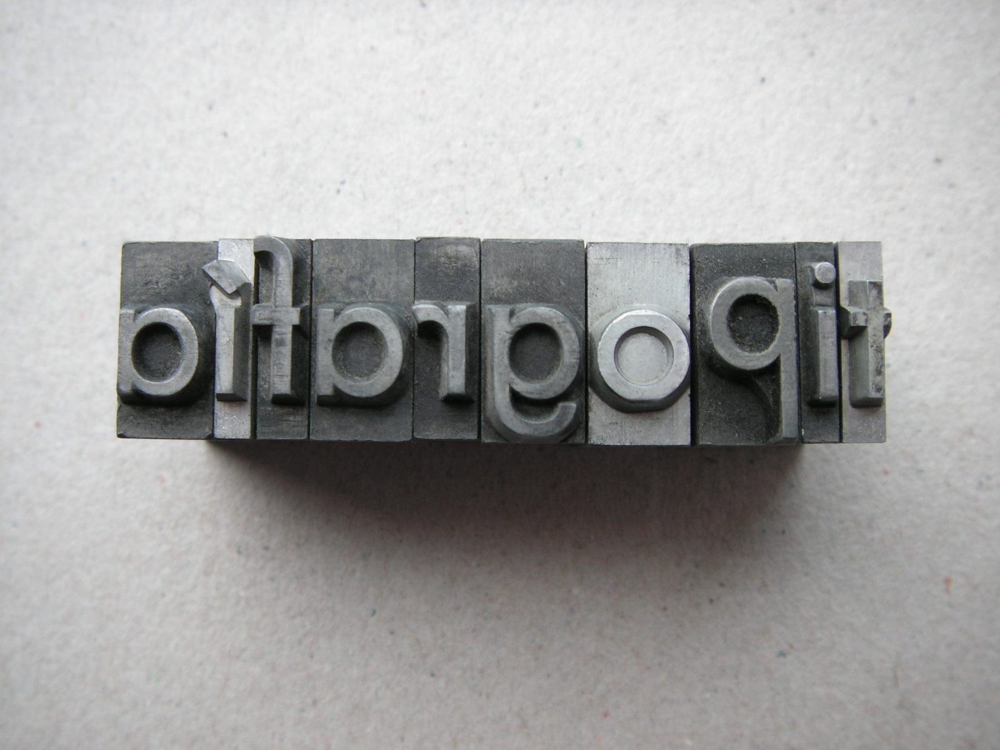

Originalmente, un estereotipo era una impresión tomada de un molde de plomo que se utilizaba en imprenta en lugar del tipo original. Este uso desembocó en una metáfora sobre un conjunto de ideas preestablecidas que se podían llevar de un lugar a otro sin cambios.

En la ética y valores humanos se usan estereotipos que contribuyen a la forma de representar los problemas que se presentan en la vida diaria.
Están constituidos por ideas, prejuicios, actitudes, creencias y opiniones preconcebidas, impuestas por el medio social y cultural, y que se aplican de forma general a todas las personas pertenecientes a una categoría, nacionalidad, etnia, edad, sexo, orientación sexual, procedencia geográfica, entre otros.
En la literatura y el arte, los estereotipos son clichés o personajes o situaciones predecibles. Por ejemplo, un diablo estereotipo es malvado, con cuernos, cola, y tridente.
Así, ¿qué estereotipo representa la imagen a continuación?
FUENTE:
Estereotipo socialo cultural, "USO COMUN PARA CATALOGAR UN ESTEREOTIPO", s.l., s.f., disponible en Internet en: https://www.sites.google.com/site/estereotiposocialocultural/home/uso-comun-para-catalogar-un-estereotipo Fecha de último acceso: 2018
Retroalimentación
Esta imagen puede representar a un villano; es decir, su ropa negra, su espalda encorvada, los bigotes en punta, sus ojos en V y su sonrisa "siniestra" son todos elementos, entre otros, que juntos y según los valores occidentales, conformarían la imagen de una persona infame, desleal, traidora, sinvergüenza, vil.
Muy distinto en sus rasgos a este héroe de ropa colorida, musculatura perfecta, pelo detalladamente peinado, mirada segura, rostro minuciosamente afeitado y postura triunfadora que nos da seguridad:
FUENTE:
Estereotipo socialo cultural, "USO COMUN PARA CATALOGAR UN ESTEREOTIPO", s.l., s.f., disponible en Internet en: https://www.sites.google.com/site/estereotiposocialocultural/home/uso-comun-para-catalogar-un-estereotipo Fecha de último acceso: 2018